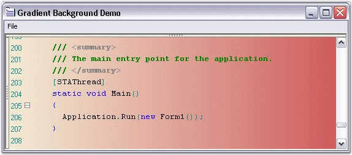
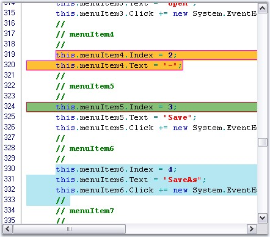

Edit Control can be displayed with a gradient background by setting the BackgroundColor property to the desired BrushInfo object. The following table lists some properties of the EditControl and their corresponding descriptions.
|
Edit Control Property |
Description |
|
BackgroundColor |
Specifies background fill style and color. |
|
Style |
Specifies the brush style. The options provided are as follows:
Solid Pattern Gradient |
|
BackColor |
Specifies the backcolor of the control. |
|
ForeColor |
Specifies the forecolor of the control. |
|
PatternStyle |
Specifies the pattern style. The options provided are as folows:
· Horizontal · Vertical · ForwardDiagonal · BackwardDiagonal · Cross · DiagonalCross · Percent05 · Percent10 · Percent20 · Percent25 · Percent30 · Percent40 · Percent50 · Percent60 · Percent70 · Percent75 · Percent80 · Percent90 · LightDownwardDiagonal · LightUpwardDiagonal · DarkDownwardDiagonal · DarkUpwardDiagonal · WideDownwardDiagonal · WideUpwardDiagonal · LightVertical · LightHorizontal · NarrowVertical · NarrowHorizontal · DarkVertical · DarkHorizontal · DashedDownwardDiagonal · DashedUpwardDiagonal · DashedHorizontal · DashedVertical · SmallConfetti · LargeConfetti · ZigZag · Wave · DiagonalBrick · HorizontalBrick · Weave · Plaid · Divot · DottedGrid · DottedDiamond · Shingle · Trellis · Sphere · SmallGrid · SmallCheckerBoard · LargeCheckerBoard · OutlinedDiamond · SolidDiamond · None |
|
GradientColors |
Specifies the gradient colors. The options provided are as follows:
· ForwardDiagonal · BackwardDiagonal · Horizontal · Vertical · PathRectangle · PathEllipse
The first entry in this list will be the same as the backcolor property, and the last entry will be the same as the forecolor property. |
|
[C#]
this.editControl1.BackgroundColor = new Syncfusion.Drawing.BrushInfo(Syncfusion.Drawing.GradientStyle.ForwardDiagonal, new System.Drawing.Color[] {System.Drawing.Color.LavenderBlush, System.Drawing.Color.AliceBlue, System.Drawing.Color.BlanchedAlmond}); |
|
[VB.NET]
Me.editControl1.BackgroundColor = New Syncfusion.Drawing.BrushInfo(Syncfusion.Drawing.GradientStyle.ForwardDiagonal, New System.Drawing.Color() {System.Drawing.Color.LavenderBlush, System.Drawing.Color.AliceBlue, System.Drawing.Color.BlanchedAlmond}) |

Figure 68: Edit Control with Gradient Background
A sample which demonstrates the Gradient Background feature is available in the below sample installation path.
..\My Documents\Syncfusion\EssentialStudio\Version Number\Windows\Edit.Windows\Samples\2.0\Appearance\ GradientBackgroundDemo
Setting BackgroundColor for Specified Range of Text
The SetBackgroundColor method is used to set the background color for a specified range of text.
|
[C#]
this.editControl1.SetBackgroundColor(new Point(1, 1), new Point(9, 9), Color.AliceBlue); |
|
[VB.NET]
Me.editControl1.SetBackgroundColor(New Point(1, 1), New Point(9, 9), Color.AliceBlue) |
Setting Background Color for Individual Lines or Selected Blocks of Text
Edit Control allows setting custom background color for individual lines as well as for selected block of text.
You can set any desired background to a particular line or block of selection, as explained below.
· Register a backcolor format with the Edit Control by using its RegisterBackColorFormat method, with appropriate values for BackgroundColor, ForegroundColor and HatchStyle parameters.
· Set the background color to the entire line or just the selected text by using the SetLineBackColor and SetSelectionBackColor methods respectively.
|
[C#]
// Register a backcolor format with EditControl. this.editControl1.RegisterBackColorFormat(Color.Aquamarine, Color.Beige, System.Drawing.Drawing2D.HatchStyle.Cross, true);
// Set the background for the entire line of text. this.editControl1.SetLineBackColor(editControl1.CurrentLine, true, format);
// Set the background for the selected block of text. this.editControl1.SetSelectionBackColor(format); |
|
[VB.NET]
' Register a backcolor format with EditControl. Me.editControl1.RegisterBackColorFormat(Color.Aquamarine, Color.Beige, System.Drawing.Drawing2D.HatchStyle.Cross, True)
' Set the background for the entire line of text. Me.editControl1.SetLineBackColor(editControl1.CurrentLine, true, format)
' Set the background for the selected block of text. Me.editControl1.SetSelectionBackColor(format) |

Figure 69: Background Color and Border set for Text
 Note:
Refer the Text Border topic to know
how to set the border for the text.
Note:
Refer the Text Border topic to know
how to set the border for the text.
Removing Background Color for Individual Lines or Selected Blocks of Text
The following methods can be used to set the background color for individual lines or selected blocks of text.
|
Edit Control Method |
Description |
|
RemoveLineBackColor |
Removes line back color. |
|
RemoveSelectionBackColor |
Removes background coloring from the selected text. |
|
[C#]
// Removes line back color. this.editControl1.RemoveLineBackColor(4);
// Removes background coloring from the selected text. this.editControl1.RemoveSelectionBackColor(); |
|
[VB.NET]
' Removes line back color. Me.editControl1.RemoveLineBackColor(4)
' Removes background coloring from the selected text. Me.editControl1.RemoveSelectionBackColor() |
A sample which demonstrates Text Highlighting is available in the following sample location.
..\My Documents\Syncfusion\EssentialStudio\Version Number\Windows\Edit.Windows\Samples\2.0\Advanced Editor Functions\TextHighlightingDemo
See Also
Line Numbers and Current Line Highlighting